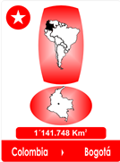
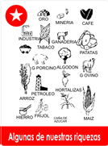
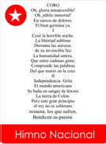
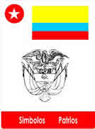

Los protectores de la Madre Tierra, la Luz, el Sol, la Luna, el Agua y el Aire, convocaron a una Extraordinaria Reunión.
Había que elegir los Símbolos Soberanos de Colombia, extraídos del Reino Vegetal y Animal, exactamente como lo habían hecho en otros lugares del Mundo.
No era tarea fácil hacer la selección, menos en un País Tropical, que tenía exceso de bellezas, en climas, riquezas y productos, pero entre todos, podían llegar a un acuerdo para encontrar los Símbolos más evidentes.
La Luz tomó la palabra diciendo:
Mi Huella no es tan notoria, el Creador me hizo transparente.
Soy la Energía Poderosa e Invisible que da Vida. Mi tarea es la Neutralidad, soy el Instrumento Secreto de la Naturaleza. No estoy autorizada para expresar mi opinión, no tengo, ni debo tener preferencias, asisto sin Voz ni Voto, pero asisto para aplaudirles la idea.
El Sol opinó:
-Sabemos que la Luz es el Hada Madrina de la Creación y nuestra Soberana Indiscutible, proporciona su Misteriosa y Generosa Energía a todas las Criaturas, la nombramos, árbitro en nuestra elección¡
TODOS ESTUVIERON DE ACUERDO, Y UN:
- ¡VIVA LA LUZ!
FUE EL APLAUSO GENERAL!
Entonces la Luz como el Hada de la Creación, mostró su apoyo y prestó su Lente Supersónico Lumínico y la Pantalla del Tiempo.
Así observarían los detalles para una decisión clara y objetiva.
Se instaló el Lente sobre el Territorio de Colombia en su extensión de 1.141. 748 Kilómetros cuadrados de Tierra, 6.342 Kilómetros de Fronteras Terrestres, más 2.900 Kilómetros de las Fronteras Marítimas del Mar Caribe y Pacífico, captando aún la Orbita Geoestacionaria, que cubre su Territorio Espacial.
Establecieron el Norte, el Sur, el Oriente y el Occidente y se asombraron por la cantidad de candidatos.
Por eso tuvieron que acudir a las Estrellas, acostumbradas a realizar los cálculos Astronómicos, para que no quedara excluida ninguna criatura de los Reinos Vegetal y Animal.
Las Estrellas sugirieron, descartar algunos Animales de las Constelaciones.
La Luz como Hada Madrina, sonreía complacida, se recreaba! Su Lente los había trastornado, valorar las criaturas de Colombia, era tarea Titánica.
Después de muchos días y meses, el Jurado insistía, que era el País, que demostraba más derroche y generosidad del Creador!
Pero mientras buscaban candidatos apropiados, alrededor de la gran mesa, los Edecanes servían, una tacita de Café, dulce y delicada.
Hasta que la Luna sorprendida dijo:
Amigos, ¿de dónde sale esta delicia? Que regalo es este! que en nuestras discusiones, nos sirve de compañía, nos relaja y nos alegra el rato?
Entonces examinaron el fruto que crecía en Colombia y conocieron su historia Nacía y se extendía en los Territorio de Clima Medio, había llegado de muy lejos, era un fruto, que se transformaba en dulce bebida, al alcance de todos, no alteraba la salud y encantaba y unía a los Humanos.
Entonces LA TIERRA opinó:
La Planta del Café, es una de mis preferidas, no es ostentosa, ni presumida, su árbol siempre es verde, aprovecha aún los terrenos mas escarpados, acepta la sombra y la compañía de otras plantas, sus frutos nacen como los seres Humanos, pequeñitos y verdes y maduran como frutos rojos, Símbolo del Amor.
El Aire interrumpió:
Admiro el Café, por su aroma, utilizo mis influencias para hacerlo notar en el Cielo, honra la dulce presencia del Creador.
El Fuego se pronunció.
Amigos: tostarlo para mi, es una diversión! El Café sería un buen candidato, para propagar la Amabilidad Colombiana.
EL AGUA, observando la Pantalla del Tiempo, dijo:
Amigos, fruto del el Café, fue creado para disfrutar los sorbos amables de la vida recrea y reúne por igual a Hombres y a Mujeres, muchos se deleitarán con su aroma y su sabor, sería un buen mensajero de la cordialidad de los habitantes de Colombia.
Entonces acordaron y eligieron los Símbolos soberanos de Colombia.
En Honor al Orden y Libertad, el Cóndor de los Andes, su Altura la Simboliza la Palma de Cera, su Abundancia, Oro, Esmeraldas, Flores y Frutos, su Riqueza, sus dos Océanos
Para Honrar su Belleza, la Exótica Orquídea, y como vocero de la Cordialidad de sus Moradores, el Café.